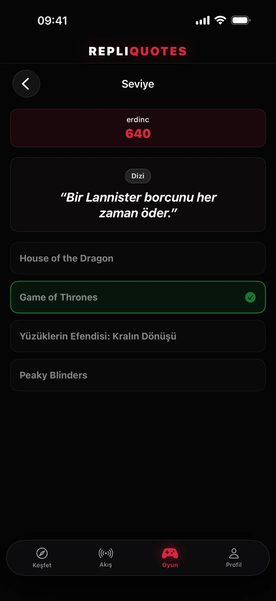
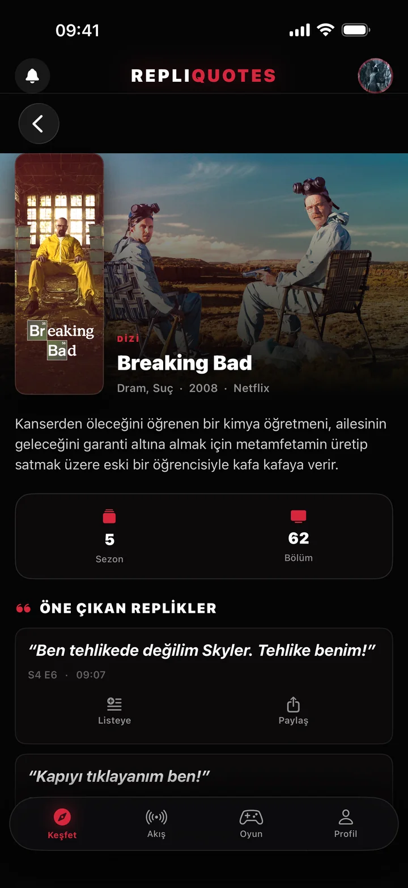
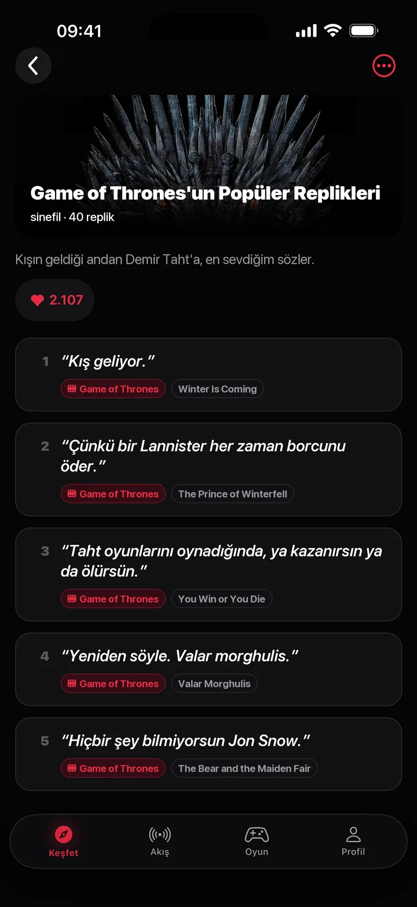
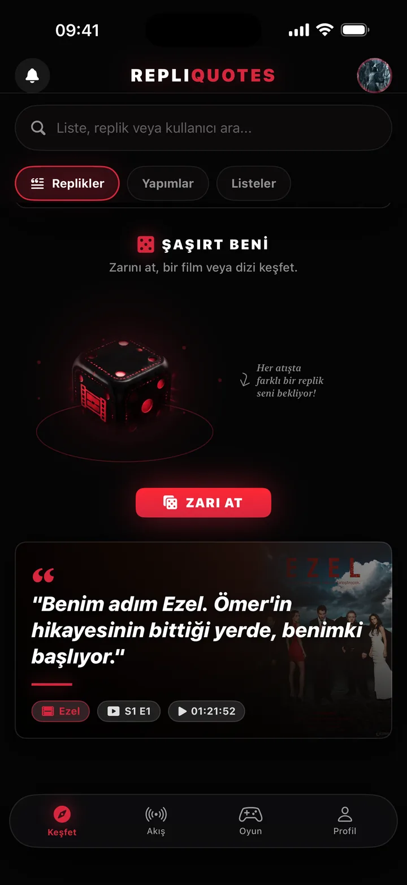
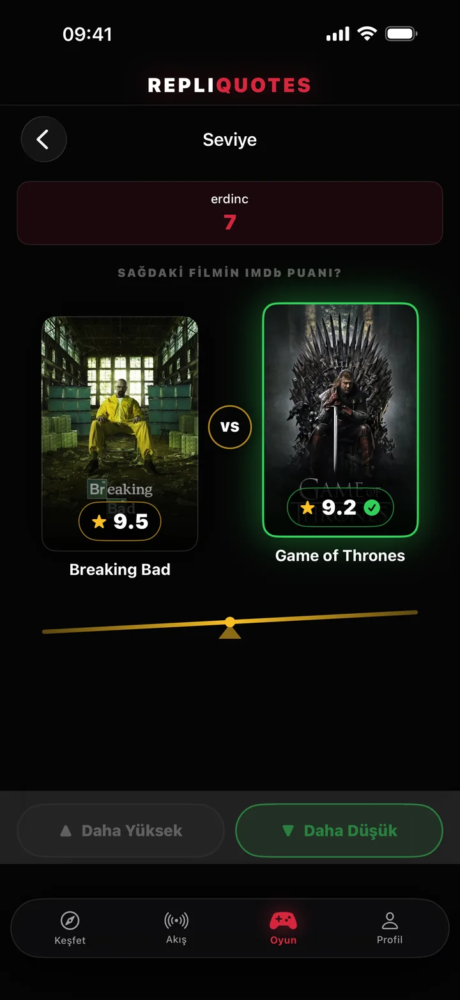
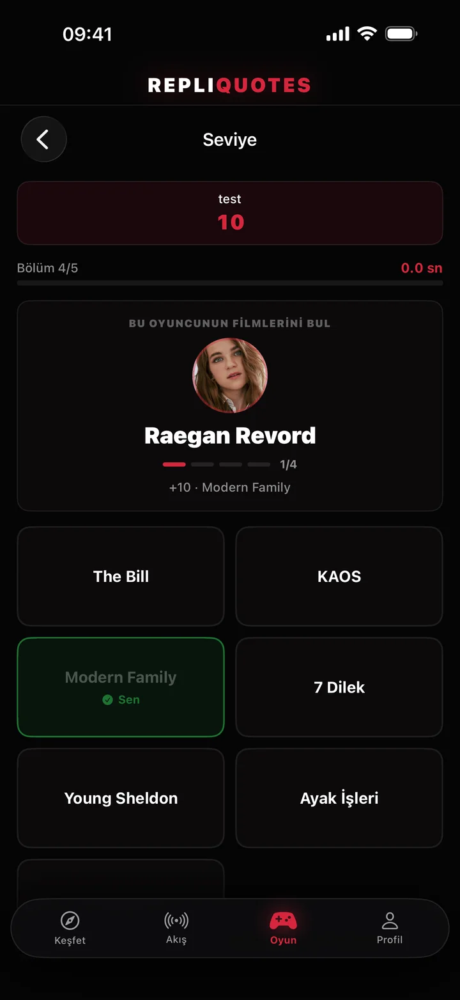
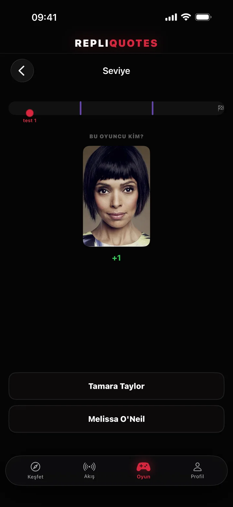
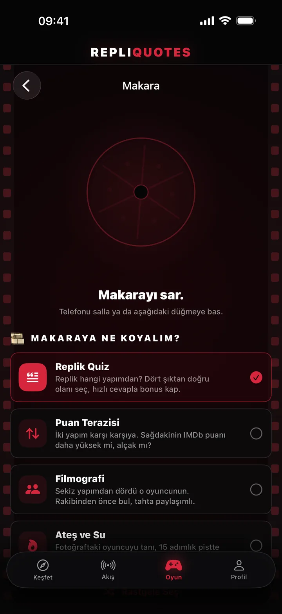
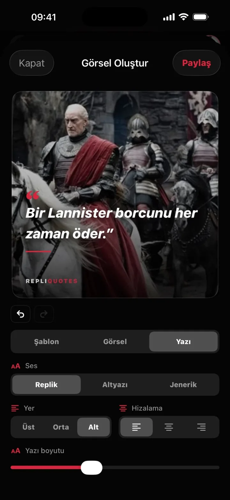
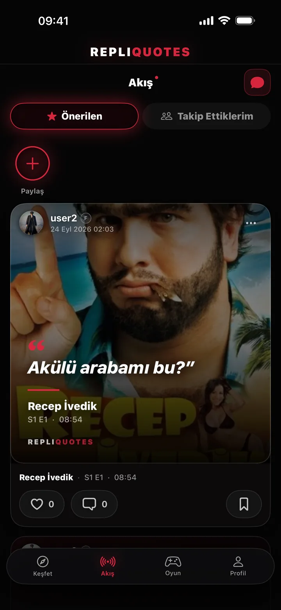

OYUN 01
Replik Quiz
Replik hangi yapımdan? Dört şıktan doğrusunu seç, hızlı cevapla bonus kap.
Hatırladığın birkaç kelimeyi yaz; RepliQuotes yüz binlerce replik arasından doğrusunu bulur, hangi yapımda, hangi bölümde ve kaçıncı dakikada geçtiğini gösterir. Sonra listene ekle, oyna, paylaş.
Cümlenin tamamını bilmene gerek yok. "tehlike benim" yazdığında Breaking Bad'in unutulmaz sahnesi karşına gelir.
Kütüphanedeki tüm dizi ve filmleri tek ekranda gez; "Diziler" ya da "Filmler" diye süz, aradığını adından bul.

"Breaking Bad'in En İyileri", "Motivasyon Sözleri", "Arkadaşlarla Kullanılacak Replikler"… Sevdiğin replikleri dağınık bırakma, listelerde topla.

Uygulamayı her açtığında "Günün Repliği" seni yeni bir sahneyle karşılar. Ne izleyeceğine karar veremiyorsan Keşfet Zarı'nı at.

Film ve dizi bilgini sına. Her tur 20 saniye, her doğru cevap sesli. Tek başına oyna, Makara'da gerçek rakiplerle kapış ya da arkadaşlarınla grup maçı yap.

Replik hangi yapımdan? Dört şıktan doğrusunu seç, hızlı cevapla bonus kap.

İki yapım karşı karşıya. Sağdakinin IMDb puanı daha yüksek mi, alçak mı?

Sekiz yapımdan dördü o oyuncunun. Hangileri olduğunu rakibinden önce bul.

Fotoğraftaki oyuncuyu tanı, doğru bildikçe pistte öne geç.
Tek Kişilik modda seviye seviye ilerle, Makara'da çevrimiçi bir rakiple eşleş ya da Grup Maçı'nda 8 kişiye kadar arkadaşınla oyna.
Oyununu seç, makarayı sar ya da telefonu salla. Makara seni saniyeler içinde çevrimiçi bir rakiple eşleştirir.

Sevdiğin repliği sinema afişi tadında bir görsele çevir; hikâyende paylaş ya da doğrudan arkadaşına gönder.

Film ve dizi tutkunlarıyla aynı akışta buluş. Repliklerini ve düşüncelerini paylaş, sevdiğin kullanıcıları takip et.

RepliQuotes'u arkadaş grubunla kullan: mesajlaş, replik gönder, aynı maçta yarış.
Mesajlar'da Sohbetler ve Gruplar ayrı. Grup kur, sohbet et, ayın sıralamasında kimin önde olduğunu gör. Grubun adını ve fotoğrafını her üye değiştirebilir.
Grupla oyna'ya dokun; 8 kişiye kadar aynı maçta kapışın. Maç sırasında hızlı tepkiler gönder.
Görsel Oluştur'da hazırladığın görseli ya da bir replik kartını tek dokunuşla sohbete gönder. Gelen görselleri telefonuna indir.
Davet bağlantını paylaş; katılan her arkadaşın için 150 XP kazan. Arkadaşlarını tek dokunuşla oyuna çağır.
Yeni mesaj, oyun daveti, takip ve beğenilerden haberin olsun. Bildirimleri tek dokunuşla temizle.
Gönderini Herkese Açık ya da yalnızca Arkadaşlar için paylaş. İstersen trendde ve sıralamalarda görünme.

RepliQuotes App Store'da, ücretsiz. Google Play sürümü çok yakında. Soruların ya da önerilerin için bize her zaman yazabilirsin.